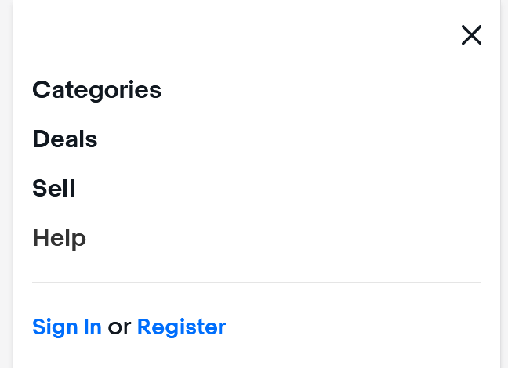

Ebay: Usability Test - mobile size
- Basis of this site is an - Ecommerce Website.
Criteria Overview
- Find out how three users ( same users from previous usability test) can navigate chosen
site
https://www.ebay.com/ and test them on time completion and relatively amount of
taps to buying and selling on the site.
View Test-script
- How easy it was to buy an item
- Time Spent
- ease of navigation ( amount of taps average)
- How easy it was to Sell an item
- Time Spent
- ease of navigation ( amount of taps)
- Collective overview on possiible improvments
User 1:
-- Buying experience --
- Time Spent
- The user again had a relative easy time buying an item, it just took less than 2
minutes to go from the search bar and find exactly what he/she
wanted.
- ease of navigation ( amount of clicks)
- The user took around around 15 clicks no issues what so ever
-- Selling experience --
- Time Spent
- Again an experienced ebay user he had just
spent just 3 mins and knew exactly where to go
- ease of navigation ( avg amount of taps)
- The user was under 20 taps because the user was given the option to auto-fill
in details when he was selling a similar item.
User 2
-- Buying experience --
- Time Spent
- As having buying experience User 2 also took around 2 minuits or less to buy an item
- ease of navigation ( amount of taps)
- Straight forward, the search bar was the first thing the User 2 found and tapped on 12 taps before checking out.
-- Selling experience --
- Time Spent
- User 2 spent a few seconds looking for the "sell" button based on previous experience 10 mins to sell an item
- ease of navigation ( amount of taps)
- The user took about 30 taps to complete putting an item for sale.
Again, user was given the option to auto-fill beased on a similar item being sold and could modofify any area needed afterward.
User 3
-- Buying experience --
- Time Spent
- Took about 2 mins which was very similar to all the other users times.
- ease of navigation ( amount of taps)
- Due to how fimilar User 3 was it took around 12 clicks and told me that the formatting and how centralized
the page was helped in buying an item, especially "buy button " highlighted in blue.
-- Selling experience --
- Time Spent
- User 3 also seemed to take a bit of time locating the "sell" button 12 -15 mins Overall.
- ease of navigation ( amount of taps)
- User 3 was also greeted with an auto-fill so around 35 taps before he completed the sell item. User 3 mention how handy and usefull
the "auto-fill" option was and enjoyed the feature a lot.
Overview
-
Basically each user notified me they had a more effective time once they found out where
everything was placed. The most troublesome location to find was the "sell" button which was
hidden within the hamburger menu,
but after a few simple taps and the users knew where the layout of the site via mobile size
was, everything seemed to
"click" .
- User 2 and user 3 mentioned that since the whole site was more condensed everything was focused on the center and so their attention wasn't all looking through a "full" page looking at all the details which helped a lot in making faster actions.
- One fun fact to identify is that All the users who during the "buying Phase" took 2 mins or less, because they mentions the search bar was front and center and there were not distracted by other items, they could just focus on buying something.
- one last useful bit of information about the usability aspect found from Ebay, is that during the selling portion every user was given an expedited "auto-fill" option when selling because of a similar sold item which boosted the speed of their selling and user experience getting from A > B

-- possible improvemnts --
- Icons
- user 3 and user 2 this time mentioned to me that "sell" was a little hidden and not very straightforward.
They didn't understand why it was not front and center like the serach-bar, so they re-iterated that would would enjoy a "sell button" dead center either above or bellow the search-bar
